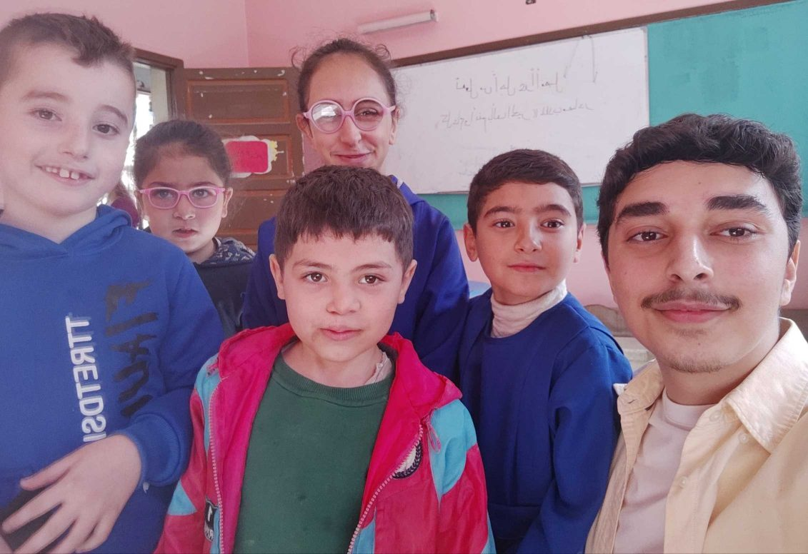
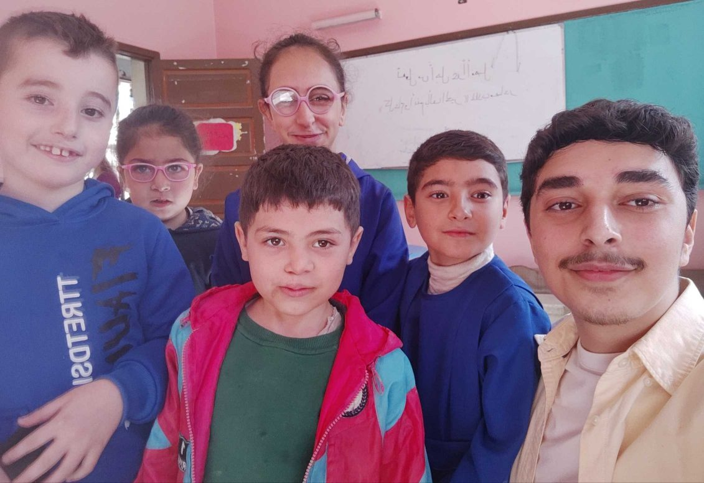

Syrian Education Field Research
A personal project of educational data collection
 

Every school I visited was a confusing mix of familiarity and surprise. Dimly lit classrooms were a sight I grew up dear to. Highly-diluted chlorine was nostalgia for my nostrils. And the sound of kids, amplifying as I approached each school, reminded me of the mornings I was late to school because the public bus driver stopped for coffee. Although I grew up accustomed to the many of the problems I saw, they were shocking from an outside perspective after 3 years in a private high school.
“We are used to it,” teachers, parents, and students repeatedly told me. But they weren’t only used to it; they improvised. A loving mother re-enrolled at college to teach her autistic child. A caring principal revamped the basement to take in displaced students. A prison repurposed into a school in a rural area. As inspiring as they are, those stories painted a scary picture: education, the only way to rebuild Syria, feels as if it’s about to crumble itself.
Methodology
The methodology stemmed from my aim of capturing the problems organically. So I decided to get on the ground and visit schools directly. I focused on observational techniques, documenting classroom layouts, student-teacher interactions, and the resources available in the schools. As I got closer to the teachers, I began conducting interviews with them to ask about their daily challenges and their perception of students’ needs.
Selection of the 26 schools I visited wasn’t random. I sought a diverse context: urban and rural, co-ed and single-sex, special-ed schools. In each case, I aimed to collect quantifiable aspects and understand the human stories behind them, trying to spot the issues the data can’t represent.
Due to the scarcity of data, I had to improvise to find ways to get data outside of the school touring. So I programmed a web scraping tool to extract 12th grade national leaving exam scores. The sample included 500 students equally divided between public and private schools. The tool abided by the terms of service of the governmental app and operated at night to avoid putting strain on its server.
Findings and Stories
The schools showed a landscape of struggles. Some were shared by all schools. Virtually every school was overcrowded, with an average of 38 students in one classroom. I repeatedly saw a desk made for two students being shared by three. Principles told me their schools received new batches of textbooks every four years, so students were handed used textbooks that often were covered with previous students notes and had many pages missing.
The school buildings faced severe issues as well. 9 reported no or insufficient water access. 7 suffered structural damage caused by war. Every school wasn't accessible for wheelchair users—including ones that had several wheelchair users. Only 4 schools showed readiness to adopt advanced technical tools. 2 schools in large population areas used the basements to accommodate more students, even though the basements were completely unfit: low lighting, small high windows, high humidity and bad smell. Just to remind you, the majority of these schools were elementary schools, with 1st to 6th graders. The psychological effect these conditions impose discourages the students and lowers their performance, both currently and in future academic pursuits.
The teachers in that school also gave me contact with a mother that lived far from this school and couldn’t enroll her autistic child. After reaching out to her, I listened to her story that represented many others that faced the same problem. When the doctors told her about her son’s situation, she re-enrolled at college, studying at Education with a specialization in special-ed. This proved invaluable when the closest—the only—public special-ed school is 3 hours from where she lived, and the private ones would cost her house’s whole annual income.
There was also another grave problem. After the political change in late 2024, Syria opened its borders to returning refugees. But the refugees would return to what? To a virtually-non-existing educational catch-up program? The program introduced by the government wasn’t applied anywhere because schools were already overcrowded—sometimes having two shifts, 7am to 12pm, and 12pm to 5pm. So there was no physical space to accommodate such programs. With over 2 millions children that had their education disturbed, this a major obstacle that hinders the smooth return of refugees, and a problem I focused on in my discussions with the officials.
The web scraping tool came back with data that portray a systematic inequality. Private schools students outperformed public schools in every subject, and the overall score differed by over 20%.
12th Grade National Leaving Exam Scores

Solutions and Government Agencies
After reaching out to several officials, I was able to hold some meetings to see what their intended solutions are. I focused in our discussions on the catch-up programs for returning refugees. The officials conceded the difficulty to implement the program they introduced due to unavailable space in schools. They also added building new schools or centers is a great strain on the government currently, but they are trying to find.
I suggested a digital alternative, transforming the program into something that can be accessed at home online. I also proposed employing tutors within that solution, where students can learn on their own or with their parents' help, and be assisted with those tutors whenever necessary. Finally, tests and examinations can be done in real-life. The officials showed interest in the idea, and we created a communication pipeline for future collaborations.
And for international organizations, every school of the 26 reported that they haven’t been visited by an international organization for more than 8 years.
Teachers frequently mentioned how the gloomy atmosphere made the school an unwelcoming space for many, leading to lower performance or even leaving school all together.
Some issues cannot be explained with numbers. For a better grasp of the situation, I invite to take a look at the media documentation.